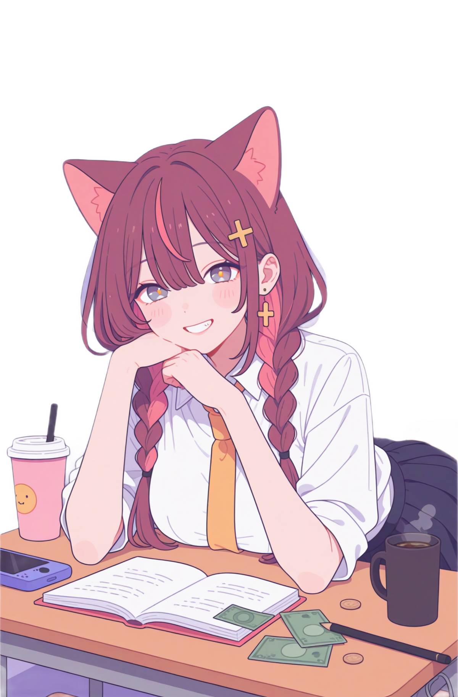

AGERU CRASH!!
CRASH END
0.00 m
RANKING
飛距離 — TOP 10
最新のプレイ — 10件
自己ベスト 0.00 m を登録
CRASHES
ながれ
1. 矢印が動いているので、押した瞬間に角度が決まる2. 押しっぱなしでパワーゲージが動く。右端に近いところで離すと発射（離した瞬間のパワーで決まる）
3. アゲルの自転車がヒコに激突 → あとは地上に並ぶキャラに当てて伸ばす
4. 止まったら終わり。飛距離（m）がスコア。画面上部に時速（km/h）が出る。
空中アクション
| エアリアル （クリック / SPACE） | アゲルが飛び蹴りで上に打ち上げ。1プレイ3回まで。高度に関係なくいつでも撃てる。 |
| ダイブ （右クリック / ↓ / Shift） | アゲルが下に叩き落とす。チャージ100%が必要だが回数は無制限、高度に関係なくいつでも撃てる。 叩きつけた勢いは着地で前方向に変換される（SLAM）。 |
| チャージ | 飛んでいる間常に回復する（満タンまで約4.8秒）。溜まりしだいダイブを撃てる。 |
キャラの効果（全員 地上にいる）
スペシャル（発動条件つき）
条件を満たしたキャラに当たると時間が止まり、0.7秒以内にクリックで SPECIAL。画面がバーンと光って特大の打ち上げになる。アゲルスペシャル
ヨクネロボに当たるとブロック状態になる。その状態でアゲル系（ベビー／ゴス／デンパ／ボス）に当たると必ず AGERU SPECIAL。| ベビーアゲル | 100人ぶん浮いてふっ飛ぶ |
| ゴスアゲル | 5回バウンド加速 |
| デンパアゲル | 停止時に1度だけ復活して再飛行 |
| ボスアゲル | 以後3回の加速が2倍 |
SHOP
0 P

飛距離100mごとに1P獲得 / バリアとエアリアル追加以外は買うたびに値上がりします（1, 2, 3, 5, 8, 13 …）